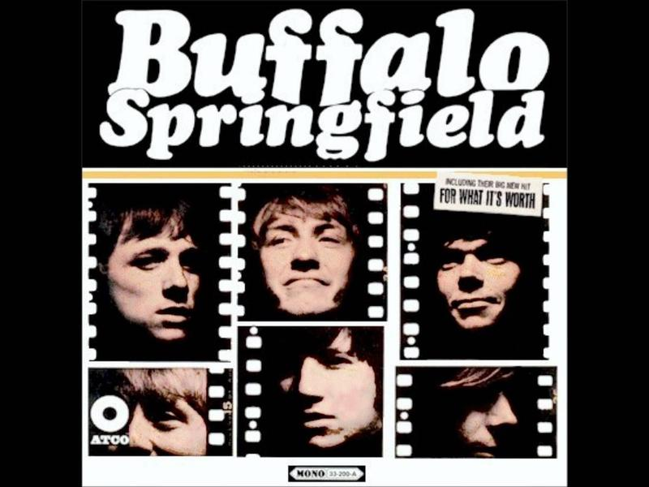

For What It's Worth
31 Jan 2022 · 6 min read
topics:

An appreciation of the song “For What It’s Worth,” recorded by Buffalo Springfield, written by Stephen Stills
The beginning of the song is a study in understatement. An electric guitar plays two notes, slowly repeated, with tremolo. The drums set up a quiet pulse-like beat. An acoustic guitar enters, strumming two chords, then beginning a quiet riff that is a definition of laid-back L.A. funk. Finally Steve Stills’ voice enters, in a quiet, conversational tone.
There’s something happening here.
What it is ain’t exactly clear.
There’s a man with a gun over there,
Telling me I got to beware.
I think it’s time we stop, children, what’s that sound?
Everybody look what’s going down.
Notice how the first two lines draw the listener in and create suspense. The singer says that “something is happening,” but we don’t yet have any idea what it is. The next two lines up the ante – saying that there is a “man with a gun” involved – but maintain the suspense, since we don’t know who the man is, why he has a gun, or what he intends to do with it. The chorus then summarizes what we know so far and issues a request for attention to some force that is threatening the singer’s community. The term “children” is interesting, since it suggests youth and innocence, and reinforces the notion of a group needing protection.
Overall, the first verse presents the central tension of the song: the contrast between the drama of the situation on one hand, and the emotional reserve of the singer and the music on the other.
The second verse gives some context to the dramatic confrontation presented in the first verse.
There’s battle lines being drawn.
Nobody’s right if everybody’s wrong.
Young people speaking their minds,
Getting so much resistance from behind.
It’s time we stop, hey, what’s that sound?
Everybody look what’s going down.
Notice that the issues generating the controversy are not identified. Seemingly, they are not of importance to the singer. What is important is the increasing polarization and intensity of the situation, the fear and anger being generated. The emotional reserve of the singer now begins to make more sense, since the singer is suggesting that cooler heads prevail, that people stop and look at what they are creating.
The musical accompaniment suggests movement and increasing intensity. Neil Young plays an electric guitar break between the end of this chorus and the beginning of the next verse. While the pace is still sedate and the volume low, the addition of the electric guitar part does indicate that something is indeed happening, and the tremolo and bent notes give some premonition of what is to come.
The next verse provides even more context, giving our first details of a specific event since the mention of the man with a gun in the first verse.
What a field day for the heat.
A thousand people in the street,
Singing songs and carrying signs,
Mostly say, “Hooray for our side.”
It’s time we stop, hey, what’s that sound?
Everybody look what’s going down.
It is interesting to see all the meanings of the word “heat” that are invoked in the first line. First, it could refer to the actual temperature on the streets in L.A. Second, it could refer to an intensity of emotion, or to pressure and stress. Third, it is a slang term for a pistol, and thus serves as a reminder of the gun mentioned in the first verse. Fourth, it is a slang term for the police, finally giving some identity to the “man with the gun.” All these meanings resonate with the listener, given the context of the song.
Again, the singer intentionally affirms the irrelevance of the issues being discussed, by referring to songs and signs “mostly saying hooray for our side,” without any further identification of what the sides represent. At the same time, he is again pointing out the divisiveness of the conflict.
The music continues to intensify in this verse, with ominously descending background vocals behind Stills’ voice. Young’s guitar at the end of the chorus is again restrained, but with the stretched notes intensifying, suggesting a sort of distortion or transformation taking place.
The fourth and final verse makes the singer’s warning explicit.
Paranoia strikes deep:
Into your life it will creep.
It starts when you’re always afraid.
You step out of line, the man come and take you away.
As suggested earlier, the singer’s concern is about the loss of innocence, and the introduction of violence and fear into his community. The music pulls out all the stops now, with background vocals behind all of Stills’ lyrics, hand claps added for percussive effect, and Young’s distorted guitar playing throughout the verse.
The song concludes with Stills and background singers repeating the chorus several times, with minor variations in lyrics and melody each time. Young’s guitar continues in the background, seemingly representing the chaos and destruction potentially being unleashed. The guitar continues after the vocals are done, then fades out, leaving the stated threat hanging, unvanquished.
Note that the title of the song, “For What It’s Worth,” appears nowhere in the song’s lyrics. Instead, it serves to comment on the situation being addressed, further cooling down the emotional environment by suggesting that the worth of the opinions being expressed can best be evaluated by the listener.
Rock is often accused of being loud, overbearing, aggressive and violent. And yet here we have a song where folk and country & western traditions are used to undercut and restrain those very tendencies, in fact to warn of their dangers. The beauty of this song is that it manages to warn of increasing polarization and violence in American society, without taking any stand other than that of acceptance of diversity and free speech. In other words, it comments on politics without itself being political. And while Stills includes comments on authority, he seems to mainly address his peers, subtly warning that strident defense of their positions – and attacks against their opponents’ – might threaten the very freedoms, attitudes and life styles they are seeking to protect.
In retrospect, one has to give prophetic credit to Stills’ song. It was only a few years later when Stills and Young, along with new partners Crosby and Nash, would release Young’s composition “Ohio.” Featuring the lyrics, “Tin Soldiers and Nixon coming / We’re finally on our own,” and ending with the terrible refrain, “Four dead in Ohio,” the song memorialized four students who had been shot dead at Kent State University during a protest against the Viet Nam war. By this time, the violent confrontation and polarization warned of in “For What It’s Worth” had sadly come to pass.
It’s interesting to see how the presentation of “For What It’s Worth” evolved in later years. The CSN&Y live album Four Way Street presents the same song with Stills accompanying himself on piano, and with vocals that are positively histrionic when compared with the laid-back singing of the original recording. By 1971, it seems, the emotional reserve of the original could no longer be maintained, even though the message still needed to be heard more than ever.
Originally published at Reason to Rock
Thanks for reading! If you’d like a convenient short URL to link to this piece, you can use pract.org/s/whwo.html. Or feel free to simply share this piece using one of the social media buttons below!